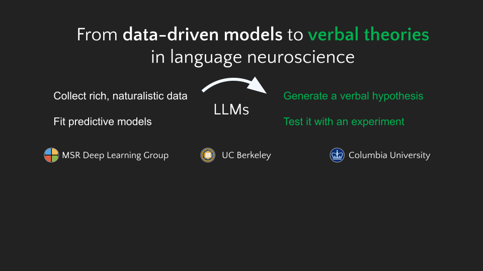
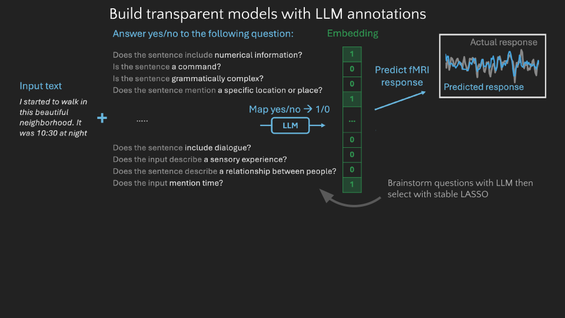
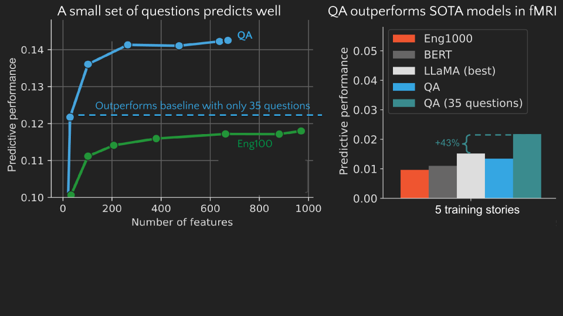
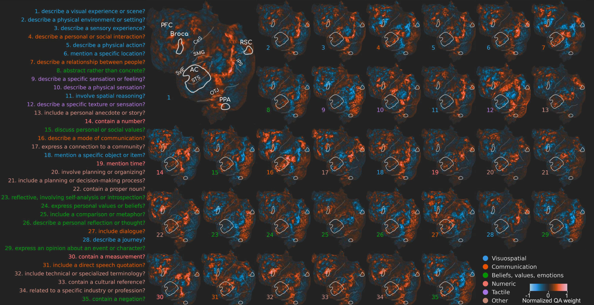
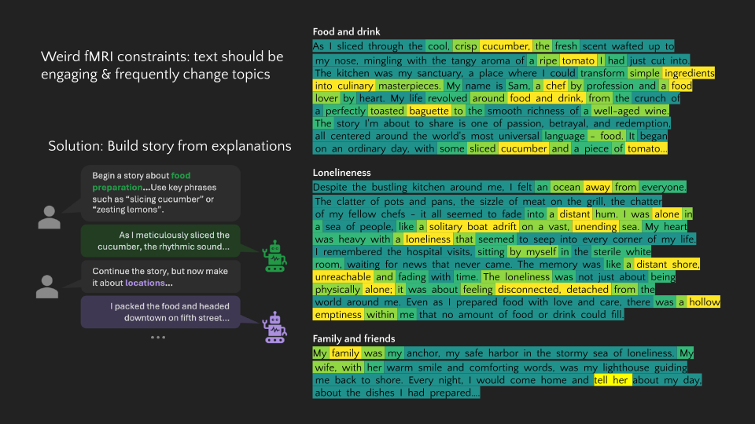
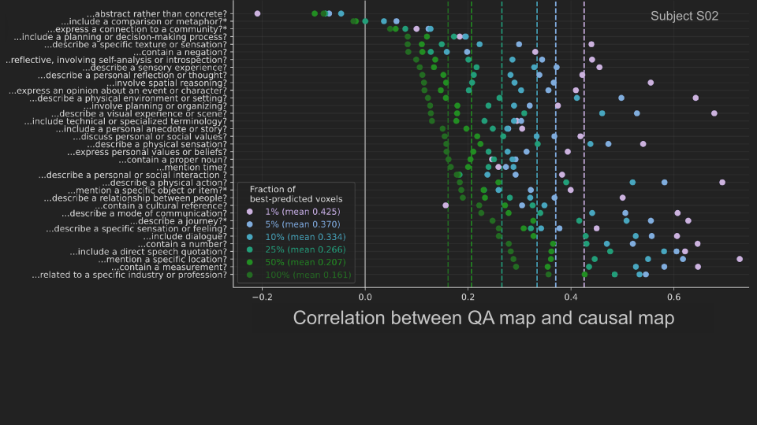

We’ve been studying how to scalably answer this question using LLMs and large-scale brain-imaging datasets. Together, these let us automatically generate and test scientific hypotheses about language processing in the brain, potentially enabling a new paradigm for scientific research. Our starting point is Huth et al. 2016...
QA encoding models
Modern data-driven encoding models are highly effective at predicting brain responses to language stimuli. However, these models struggle to explain the underlying phenomena, ie what features of the stimulus drive the response? We present Question Answering encoding models, a method for converting qualitative theories of language selectivity into highly accurate, interpretable models of brain responses. QA encoding models annotate a language stimulus by using a large language model to answer yes-no questions corresponding to qualitative theories.


Generative causal testing
Representations from large language models are highly effective at predicting BOLD fMRI responses to language stimuli. However, these representations are largely opaque: it is unclear what features of the language stimulus drive the response in each brain area. We present generative causal testing (GCT), a framework for generating concise explanations of language selectivity in the brain from predictive models and then testing those explanations in follow-up experiments using LLM-generated stimuli.
This approach is successful at explaining selectivity both in individual voxels and cortical regions of interest (ROIs), including newly identified microROIs in prefrontal cortex. We show that explanatory accuracy is closely related to the predictive power and stability of the underlying predictive models. Finally, we show that GCT can dissect fine-grained differences between brain areas with similar functional selectivity. These results demonstrate that LLMs can be used to bridge the widening gap between data-driven models and formal scientific theories.
